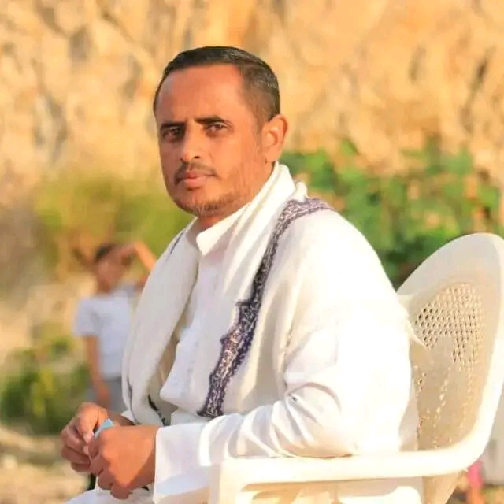
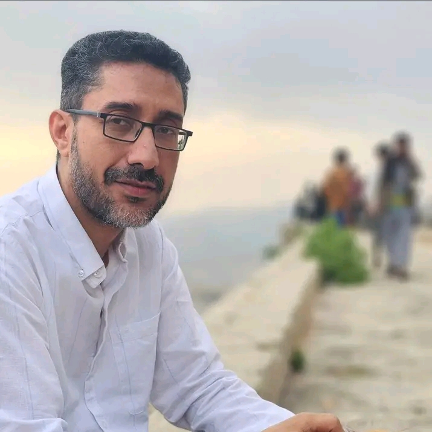
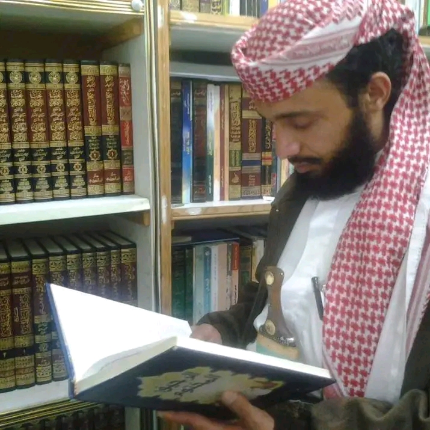

مرحباً بكم في مركز الفاروق
مشايخ مركز الفاروق
الشيخ/ منصور المنيفي
فقة و اصول الفقة
المزيد
الشيخ/ سمير المخلافي
كتاب البرهان
المزيد

الشيخ/ طه غالب
اصول التفسير
المزيد

الشيخ/ عبدالسلام العديني
السيرة النبوية
المزيد

الشيخ/ محمد سنحان
لمعة الاعتقاد و النحو
المزيد

الشيخ/ عصام المليكي
فقة الجزء الثاني
المزيد
ملاحظة :الدروس الموجودة في الموقع من تاريخ 2025/3/2
ًالدروس السابقة لم نستطع توفيرها حاليا